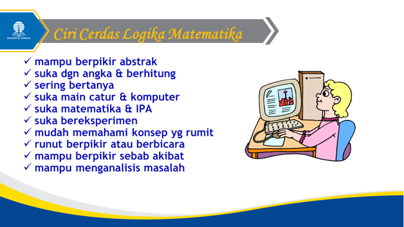
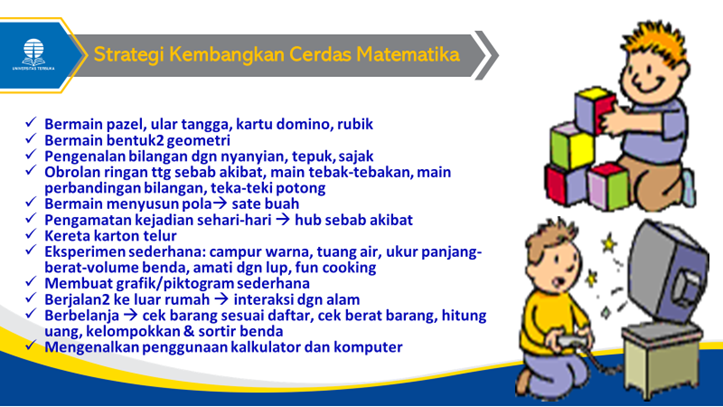

Kecerdasan logika matematika yaitu kecerdasan dalam mengolah angka atau menggunakan logika. Kecerdasan ini melibatkan sejumlah bagian pusat berpikir pada otak. Ciri-ciri anak yang dominan dengan kecerdasan matematis logis adalah: mampu berpikir secara abstrak, suka dengan angka dan hitung-menghitung, mudah dalam memahami konsep yang rumit, runut dalam berpikir atau berbicara, mampu berpikir sebab akibat dan mampu menganalisis suatu masalah dengan tepat.

Bagaimana cara mengembangkan kecerdasan matematis logis pada anak usia dini? Ada beberapa strategi yang dapat dilakukan yaitu sebagai berikut:
- Bermain pazel, dapat juga dengan permainan lain seperti ular tangga atau kartu domino. Permainan ini membantu mengasah kemampuan memecahkan masalah menggunakan logika.
- Bermain dengan bentuk-bentuk geometri, dapat dimulai sejak usia bayi dengan menggantung berbagai bentuk geometri warna-warni. Untuk anak yang lebih besar ajak anak membandingkan perbedaan berbagai bentuk geometri, kegunaan, mengelompokkan, dan mencari contoh benda di sekitar dengan bentuk geometri tertentu.
- Pengenalan bilangan melalui nyanyian, tepuk, dan sajak berirama. Anak dapat juga membuat tepuk atau lagu versi sendiri untuk mengenal berhitung.
- Obrolan ringan tentang sebab akibat, bermain tebak-tebakan, bermain tentang perbandingan bilangan dengan topik yang menarik bagi anak.
- Bermain menyusun pola tertentu, dengan kancing warna-warni atau benda lainnya, pengamatan atas berbagai rutinitas kejadian sehari-hari sehingga anak memahami hubungan sebab akibat.
- Eksperimen sederhana misalnya bermain mencampur warna atau bermain menuang air ke berbagai wadah dengan bermacam bentuk, mengukur besar kaki, menemukan konsep udara, mengukur panjang-berat-volume suatu benda, mengamati benda kecil dengan lup, menyeimbangkan batang kayu dan gantungan pakaian,
- Membuat grafik piktogram sederhana, misalnya tentang jenis kelamin anak sekelas, grafik kehadiran dalam sebulan, dll.
- Berjalan-jalan ke luar rumah untuk berinteraksi dengan alam sekitar.
- Menagjak anak berbelanja, misalnya mengecek barang sesuai daftar belanja, mencermati berat barang yang dibeli, menghitung uang kembalian, memilih dan mengelompokkan berbagai barang (bermain mengelompokkan atau menyortir benda)
- Mengenalkan cara menggunakan kalkulator dan komputer.

Media yang dapat dimanfaatkan untuk mengembangkan kecerdasan matematis logis adalah: papan sortir geometris, papan sortir lingkaran, papan pasak silinder, kotak sortir, roda bersusun, papan aneka bentuk, puzel bilangan, silinder ganda, timbangan, meteran, kartu domino, kalkulator, komputer, dan lain-lain.